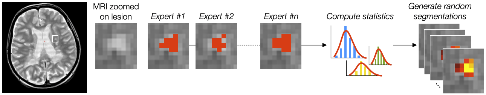
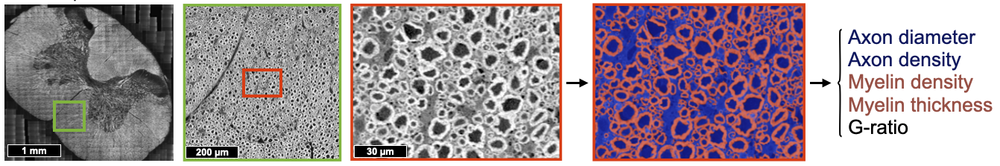
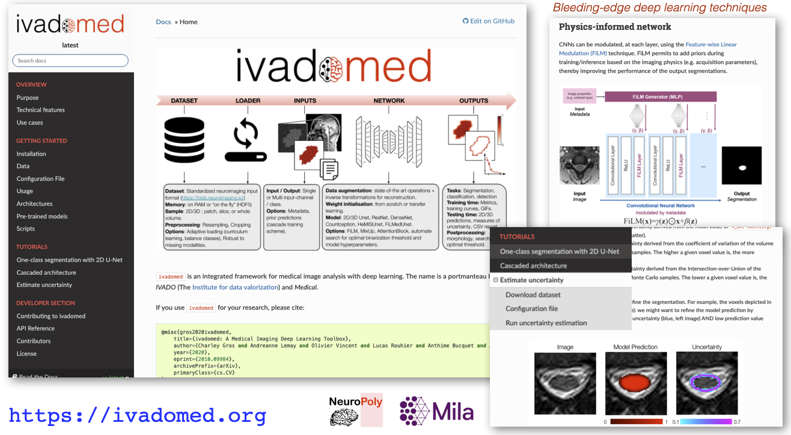
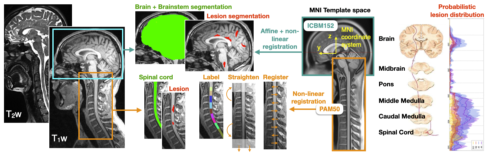

MSc | PhD | PostDoc Positions#
NeuroPoly Lab (Polytechnique, University of Montreal) is located in Montreal, best student-city in the world! (https://www.topuniversities.com/city-rankings/2017). We develop advanced MRI image analysis techniques using deep learning and distribute them as open-source software. In collaboration with neuroradiologists and world experts in deep learning (Mila), we apply these tools in patients with traumatic injury and neurodegenerative diseases (multiple sclerosis, ALS, etc.).
We are recruiting Master/PhD students and Postdoc fellows to work on various projects:
Machine learning projects ⚙️#
These projects are done in partnership with Mila, with possible co-supervision from Mila profs.
data science | deep learning | computer vision | segmentation | medical applications
Generalization of deep learning models#

Description: Most deep learning segmentation methods work for a specific data domain (eg: hospital, acquisition parameters, patient demographics). This strongly limits the dissemination of advanced solutions across various clinical and research centers. Some solutions, such as transfer learning, require the user to train a model, which is not realistic in a “real world” clinical scenario, where clinicians neither have the time nor the expertise to train models that work for their datasets. The goal of this project is to find solutions to make deep learning segmentation models work for a large variety of datasets. Few avenues include:
Incorporation of prior constraints from MRI physics during training;
Synthesizing images during data augmentation;
Careful selection of heterogeneous dataset;
Skills:
deep learning|computer vision|python|git/GitHubRelated projects: ivadomed
Relevant publications: Lemay et al. MIDL 2021
Contact: Julien Cohen-Adad
Uncertainty estimation and applications#

Description: A well-known bottleneck of deep learning segmentation methods is the high intra- and inter-rater variability, which limits the performance of supervised learning methods. The goal of this project is to incorporate uncertainty measures related to the inter-rater variability in the output predictions. Spin-off projects include:
Using uncertainty in active learning framework for histology and medical data segmentation;
Use SoftSeg training framework to encode uncertainty.
Skills:
deep learning|computer vision|python|git/GitHubRelated projects: ivadomed
Contact: Julien Cohen-Adad
Lifelong learning of multiple sclerosis lesion segmentation#

Description: The goal of this project is to implement a comprehensive and sustainable analysis framework for the segmentation of multiple sclerosis (MS) lesions in the brain and spinal cord. Deep learning models will be continuously updated with new data being prospectively acquired across several clinics in Canada. We will validate the clinical relevance of these models as a sensitive biomarker of disease severity and prognosis. The project focuses on three aims (the potential candidate student can pick the aim they are most interested in):
Create a general model for brain and spinal cord MS lesion segmentation, robust to hospitals, MRI vendor and acquisition parameters;
Implement a continuous learning framework and assess stability of model performance over time using a retrospective database;
Demonstrate the clinical relevance of automatic segmentation-based biomarkers.
Skills: Python programming | git/GitHub | deep learning | data science | (computer vision)
Contact: Julien Cohen-Adad
Segmentation of axons and myelin from histology#

Description: Segment axons and myelin sheath (multi-class) from large-scale histology data, in order to create microstructure atlas of the human central nervous system (example: see BigBrain project: https://bigbrain.loris.ca). Collaborate with neuroscientists around the world. Dataset: Electron microscopy and optical imaging, with about 15,000 axons and myelin sheath manually segmented.
Skills:
deep learning|image analysis|python|git/GitHubRelated to: AxonDeepSeg | ivadomed
Relevant publications: Zaimi et al. Scientific Report 2018
Contact: Julien Cohen-Adad
Open-source AI solutions#

Description: The goal of this project is to bring AI methods into clinical radiology routine via user-friendly software solutions. The candidate will contribute to medical AI frameworks, including ivadomed.
Skills:
software engineering|python|git/GitHub|deep learning|data scienceRelated projects: ivadomed, SCT, AxonDeepSeg
Relevant publications: Gros et al. The Journal of Open Source Software 2021
Contact: Julien Cohen-Adad
Neuroimaging projects 🧠#
analysis pipeline | biomarker | reproducibility | data science | computer vision | medical application | multiple sclerosis | spinal cord injury
Analysis of MRI data from multiple sclerosis patients#

Description: Better understanding of multiple sclerosis (MS) and its diagnosis is key for the development of personalized therapy. MRI is an important diagnosis tool, but the use of advanced biomarkers is complex and requires further methodological development for it to be used by clinicians. The goal of this project is to develop and apply an pipeline for the analysis of MRI data from MS patients. The dataset consists of >1,000 patients coming from >12 international hospitals, with MS lesions labeled by neuroradiologists. Potential candidates can work on either of these sub-projects:
Set up an analysis pipeline to automatically process MRI scans, perform quality control of the analysed datasets (eg: identify failed automatic processes and find solutions);
Interpret the results with the help of neurologists, perform statistics to find best biomarkers from MRI data (eg: spinal cord cross-sectional area, MS lesion load).
Skills:
image analysis|python|git/GitHub|analysis pipeline|computer vision|statisticsRelevant publications: Kerbrat et al. Brain 2020, Eden et al. Brain 2019
Contact: Julien Cohen-Adad
Open-source Software Development for MRI Data#

Description: The goal of this project is to contribute to the development of the Spinal Cord Toolbox, an open-source software for the analysis of medical MRI data of the spinal cord. This software is used by radiologists and researchers for the diagnosis and understanding of spinal cord pathologies, including: spinal cord injury, multiple sclerosis and amyotrophic lateral sclerosis. The candidate will develop the following skills: computer vision, image registration, neuroimaging techniques, basics of MRI, scientific libraries (scipy, numpy, nibabel). The candidate will have the opportunity to interact with clinicians and researchers worldwide and help organizing workshops.
Skills:
software engineering|python|git/GitHub|computer vision|data scienceRelated projects: SCT
Relevant publications: De Leener et al. NeuroImage 2017
Contact: Julien Cohen-Adad
Diffusion Tensor Imaging (DTI) for Radiotherapy Treatment Planning of Glioma#
Description: We are recruiting an MSc student to work on DTI-based tractography for predicting paths of tumor spread during radiotherapy treatment planning of gliomas. Research will be conducted at the NeuroPoly (Polytechnique, University of Montreal, www.neuro.polymtl.ca), and in collaboration with the Radiation Oncology department of the McGill University Health Center (MUHC).
Skills: MRI (acquisition and analysis) | Radiotherapy | Cancer
Contact: Eva Alonso-Ortiz
MRI Physics projects 🧲#
mri | physics | rf coils | shimming | biophysical modeling
Realtime compensation of magnetic field variation in MRI (realtime shimming)#

Description: To obtain a nice image inside the body, an MRI device assumes that the main magnetic field (B0) is homogeneous and stable over time. Unfortunately (or fortunately for the subject), subjects breathe while in the scanner. When subjects breathe, the B0 field varies in time and space. The NeuroPoly laboratory, in collaboration with Dr. Stockmann (Harvard/MIT), has developed hardware and software methods to compensate for these variations. The principle is based on the development of so-called “shim” coils, in which a direct current circulates, generating a magnetic field (Biot-Savart law) which compensates for the inhomogeneities of the B0 field. To orchestrate these complex experiments, the NeuroPoly laboratory has also developed free software: https://shimming-toolbox.org. We recruit Master/PhD/Postdoc students to work on real-time shimming projects. Examples of projects: implementation of optimization methods to find the right shim current combinations for each coil element (taking into account physical constraints, such as the maximum allowed current and dB/dt), experimentation with human subjects at 3T and 7T (taking measurements, image analysis), comparison and implementation of robust methods to map the B0 field, dynamic and real-time shimming of the spinal cord at 7T. The research will be conducted at the NeuroPoly laboratory (Polytechnique, Université de Montréal, www.neuro.polymtl.ca), at the Montreal Neurological Institute (MNI, McGill University) and in collaboration with the Martinos Center (Harvard/MIT).
Skills: Ultra-high field MRI | MRI acquisition | Image analysis
Related projects: Shimming Toolbox
More details here
Contact: Julien Cohen-Adad
Vendor-agnostic realtime shimming#
Description: In relation to the realtime shimming described above, it would be nice to be able to perform realtime shimming while using the internal gradient and shim coils from the MRI system itself. One difficulty is that a lot of code and access to the hardware on these proprietary systems are restricted. A solution would be to use an RTHawk system, which offers full modularity when driving the MRI system.
Skills: Physics | Familiar with MRI | Computer programming | System integration | Experimentation | Image analysis
Related projects: Shimming Toolbox, RTHawk environment
Contact: Julien Cohen-Adad
B0 Magnetic Field Mapping#
Description: We are recruiting MSc/PhD/postdoc to work on B0 magnetic field mapping at 3 T and 7 T. Many MRI techniques, such fMRI, DTI, and T2* mapping are highly sensitive to B0 inhomogeneities. B0-related artifacts can be minimized or eliminated if the B0 field distribution is known. Different approaches to measuring the B0 field have been proposed over the years. This project would aim to evaluate different B0 mapping techniques and propose B0 mapping procedures for 3 T and 7 T imaging. Research will be conducted at the NeuroPoly lab (Polytechnique, University of Montreal, www.neuro.polymtl.ca), and at the Montreal Neurological Institute (MNI, McGill University).
Skills: Physics | MRI (acquisition and analysis) | Ultra-high field MRI
Contact: Eva Alonso-Ortiz
What profile are we looking for? 👀#
For projects on image analysis | deep learning:
Strong coding skills in Python, use of git/GitHub
Passion for open-source software, data science and knowledge sharing ❤️
Experience in data science, computer vision and medical imaging is an asset
For projects on MRI physics:
Strong theoretical background in physics
Experience in MRI
Coding skills in Python/Matlab, use of git/GitHub
Why you should join us?#
Join an environment that fosters autonomy, passion and creativity;
Get the opportunity to take leadership in open-source projects with strong impact in the medical field;
You will gain highly relevant expertise on bleeding edge technologies (MRI physics, computer vision, A.I., deep learning, etc.)
You will be using a state-of-the-art 7T Siemens Terra system
You will interact with radiologists and neurosurgeons who will apply these techniques
You will collaborate with top institutions (Univ. Montreal, McGill, MGH/Harvard, UCL, Oxford, etc.)
How to apply? ✍️#
Send requests to the contact person listed under each project. Please include CV, GitHub link, blogs, grades, references. No need to send reminders, we always receive and see your emails.
Employment equity and diversity#
Employment equity is a commitment to equal treatment and fairness in the workplace. It strives to ensure that no one is denied an opportunity for employment or advancement for reasons unrelated to their abilities. We welcome applications from Aboriginal persons, persons with disabilities, ethnic minorities, persons of minority sexual orientation or gender identity, visible minorities, women and others who may contribute to diversification.